<!doctype html>
<html lang="de">
  <head>
    <meta charset="utf-8">

		<title>Stabi Tool Tuesday</title>

		<meta name="description" content="A colaborative learning space for all things DH">
		<meta name="author" content="Roman Kuhn">

		<meta name="apple-mobile-web-app-capable" content="yes">
		<meta name="apple-mobile-web-app-status-bar-style" content="black-translucent">

		<meta name="viewport" content="width=device-width, initial-scale=1.0, maximum-scale=1.0, user-scalable=no, minimal-ui">

    <link rel="stylesheet" href="dist/reveal.css">
    <link rel="stylesheet" href="dist/theme/white.css">
  </head>
  <body>
    <div class="reveal">
      <div class="slides">
         <section data-markdown data-separator="^\n---\n" data-separator-vertical="^\n--\n" data-separator-vertical="^\n--\n" data-charset="utf-8">
          <script type="text/template">
          <!--content goes here-->

          ## Stabi Tool Tuesday
          ### 7 - Stilometrie <!-- .element: class="fragment" -->
          21.01.2025

          ---
          ### Tool Tuesday
          Ein kollaborativer Raum, um DH-Methoden und tools zu diskutieren... auszuprobieren... zu experimentieren...

          ...manchmal auch zu scheitern?

          --

          ### no code
          (fast)<!-- .element: class="fragment" -->
     

          --
          
          Folien und weitere Materialien finden sich hier: https://github.com/r0man-ist/tooltuesday

          Die heutigen Folien hier: https://r0man-ist.github.io/tooltuesday/slides/Netzwerkvisualierung.html

          Kontakt: roman.kuhn@sbb.spk-berlin.de

---
### Überblick über die Reihe
jeden zweiten Dienstag

im Moment sieben Termine fest geplant:
* Datenquellen und Schnittstellen
* Datenstrukturierung mit OpenRefine
* OCR/HTR
* Named Entity Recognition (NER)
* Topic Modeling
* Netzwerkvisualierung (Gephi)
* **Stylometry**


--
Orientiert an einer (prototypischen) DH-'pipeline'

Forschungsidee/Forschungsfrage

&#8618; Daten suchen (und finden); Daten generieren

&#8618; Daten aufbereiten

&#8618; Daten auswerten, transformieren

&#8618; Ergebnisse (und neue Daten) publizieren/visualisieren

--
Weitere Termine/Themen bei Bedarf

Bring your own data

---

### Vorab

[stylo](https://github.com/computationalstylistics/stylo?tab=readme-ov-file)

[R](https://ftp.fau.de/cran/) 

optional: [RStudio](https://posit.co/download/rstudio-desktop/) 


---
### Stilometrie -- Anwendungen
- Autorschaftsattribuierung
- Forensik
- Gattungsstilistische Merkmale
- Epochenstile?
- Stilmerkmale allgemein (Ist Stil gegendert?, Gibt es bei Autor X einen Früh- oder Spätstil?, Haben Autorengruppen einen identifizierbaren Stil?, etc.)
- Übersetzerstil?
- Stilistische/auktorielle Brüche innerhalb eines Werks

--

#### "Spektakuläre" Fälle

##### J.K. Rowling / "Robert Galbraith"
P. Juola: [How a Computer Program Helped Show J.K. Rowling write A Cuckoo’s Calling](https://www.scientificamerican.com/article/how-a-computer-program-helped-show-jk-rowling-write-a-cuckoos-calling/), *Scientific American*, 2013.

##### Harper Lee vs. Truman Capote
M. Eder / J. Rybicki: [Go Set A Watchman while we Kill the Mockingbird In Cold Blood](https://computationalstylistics.github.io/blog/harper-lee/), 2015.

##### 


--

#### Merkmale

Welche Merkmale lassen sich identifizieren?
Wie lassen sich die Merkmale aggregieren und vergleichen?

--

#### George Eliot: *The Mill on the Floss*
<div style="width:850px;height:450px;overflow:auto;padding:5px;font-size:medium">A wide plain, where the broadening Floss hurries on between its green
  banks to the sea, and the loving tide, rushing to meet it, checks its
  passage with an impetuous embrace. On this mighty tide the black
  ships--laden with the fresh-scented fir-planks, with rounded sacks of
  oil-bearing seed, or with the dark glitter of coal--are borne along to
  the town of St. Ogg's, which shows its aged, fluted red roofs and the
  broad gables of its wharves between the low wooded hill and the
  river-brink, tingeing the water with a soft purple hue under the
  transient glance of this February sun. Far away on each hand stretch
  the rich pastures, and the patches of dark earth made ready for the
  seed of broad-leaved green crops, or touched already with the tint of
  the tender-bladed autumn-sown corn. There is a remnant still of last
  year's golden clusters of beehive-ricks rising at intervals beyond the
  hedgerows; and everywhere the hedgerows are studded with trees; the
  distant ships seem to be lifting their masts and stretching their
  red-brown sails close among the branches of the spreading ash. Just by
  the red-roofed town the tributary Ripple flows with a lively current
  into the Floss. How lovely the little river is, with its dark changing
  wavelets! It seems to me like a living companion while I wander along
  the bank, and listen to its low, placid voice, as to the voice of one
  who is deaf and loving. I remember those large dipping willows. I
  remember the stone bridge.
  And this is Dorlcote Mill. I must stand a minute or two here on the
  bridge and look at it, though the clouds are threatening, and it is
  far on in the afternoon. Even in this leafless time of departing
  February it is pleasant to look at,--perhaps the chill, damp season
  adds a charm to the trimly kept, comfortable dwelling-house, as old as
  the elms and chestnuts that shelter it from the northern blast. The
  stream is brimful now, and lies high in this little withy plantation,
  and half drowns the grassy fringe of the croft in front of the house.
  As I look at the full stream, the vivid grass, the delicate
  bright-green powder softening the outline of the great trunks and
  branches that gleam from under the bare purple boughs, I am in love
  with moistness, and envy the white ducks that are dipping their heads
  far into the water here among the withes, unmindful of the awkward
  appearance they make in the drier world above.
  The rush of the water and the booming of the mill bring a dreamy
  deafness, which seems to heighten the peacefulness of the scene. They
  are like a great curtain of sound, shutting one out from the world
  beyond. And now there is the thunder of the huge covered wagon coming
  home with sacks of grain. That honest wagoner is thinking of his
  dinner, getting sadly dry in the oven at this late hour; but he will
  not touch it till he has fed his horses,--the strong, submissive,
  meek-eyed beasts, who, I fancy, are looking mild reproach at him from
  between their blinkers, that he should crack his whip at them in that
  awful manner as if they needed that hint! See how they stretch their
  shoulders up the slope toward the bridge, with all the more energy
  because they are so near home. Look at their grand shaggy feet that
  seem to grasp the firm earth, at the patient strength of their necks,
  bowed under the heavy collar, at the mighty muscles of their
  struggling haunches! I should like well to hear them neigh over their
  hardly earned feed of corn, and see them, with their moist necks freed
  from the harness, dipping their eager nostrils into the muddy pond.
  Now they are on the bridge, and down they go again at a swifter pace,
  and the arch of the covered wagon disappears at the turning behind the
  trees.</div>


--

  #### George Eliot: *The Mill on the Floss*
  <div style="width:850px;height:450px;overflow:auto;padding:5px;font-size:medium">
    <b style="color:hsla(0,100%,50%,1);">A</b> wide plain, where <b style="color:hsla(0,100%,50%,1);">the</b> broadening <b style="color:hsla(240,100%,50%,1);">Floss</b> hurries on between <b style="color:hsla(0,100%,50%,1);">its</b> green
    banks <b style="color:hsla(0,100%,50%,1);">to the</b> sea, <b style="color:hsla(0,100%,50%,1);">and</b> <b style="color:hsla(0,100%,50%,1);">the</b> loving tide, rushing <b style="color:hsla(0,100%,50%,1);">to</b> meet <b style="color:hsla(0,100%,50%,1);">it</b>, checks <b style="color:hsla(0,100%,50%,1);">its</b>
    passage <b style="color:hsla(0,100%,50%,1);">with</b> <b style="color:hsla(0,100%,50%,1);">an</b> <b style="color:hsla(240,100%,50%,1);">impetuous</b> embrace. <b style="color:hsla(0,100%,50%,1);">On</b> <b style="color:hsla(0,100%,50%,1);">this</b> mighty tide <b style="color:hsla(0,100%,50%,1);">the</b> black
    ships--laden <b style="color:hsla(0,100%,50%,1);">with</b> <b style="color:hsla(0,100%,50%,1);">the</b> <b style="color:hsla(240,100%,50%,1);">fresh-scented fir-planks</b>, <b style="color:hsla(0,100%,50%,1);">with</b> rounded sacks <b style="color:hsla(0,100%,50%,1);">of</b>
    oil-bearing seed, <b style="color:hsla(0,100%,50%,1);">or</b> <b style="color:hsla(0,100%,50%,1);">with</b> <b style="color:hsla(0,100%,50%,1);">the</b> dark glitter <b style="color:hsla(0,100%,50%,1);">of</b> coal--<b style="color:hsla(0,100%,50%,1);">are</b> borne along <b style="color:hsla(0,100%,50%,1);">to</b>
    <b style="color:hsla(0,100%,50%,1);">the</b> town <b  style="color:hsla(0,100%,50%,1);">of</b> <b style="color:hsla(240,100%,50%,1);">St. Ogg's</b>, <b  style="color:hsla(0,100%,50%,1);">which</b> shows <b style="color:hsla(0,100%,50%,1);">its</b> aged, <b style="color:hsla(240,100%,50%,1);">fluted</b> red roofs <b style="color:hsla(0,100%,50%,1);">and</b> <b style="color:hsla(0,100%,50%,1);">the</b>
    broad gables <b style="color:hsla(0,100%,50%,1);">of</b> <b style="color:hsla(0,100%,50%,1);">its</b> <b style="color:hsla(240,100%,50%,1);">wharves</b> between <b style="color:hsla(0,100%,50%,1);">the</b> low wooded hill <b style="color:hsla(0,100%,50%,1);">and</b> <b style="color:hsla(0,100%,50%,1);">the</b>
    river-brink, <b style="color:hsla(240,100%,50%,1);">tingeing</b> <b style="color:hsla(0,100%,50%,1);">the</b> water with <b style="color:hsla(0,100%,50%,1);">a</b> soft purple hue under <b style="color:hsla(0,100%,50%,1);">the</b>
    transient glance <b style="color:hsla(0,100%,50%,1);">of</b> this February sun. Far away on each hand stretch
    the rich pastures, and the patches of dark earth made ready for the
    seed of broad-leaved green crops, or touched already with the tint of
    the tender-bladed autumn-sown corn. There is a remnant still of last
    year's golden clusters of beehive-ricks rising at intervals beyond the
    hedgerows; and everywhere the hedgerows are studded with trees; the
    distant ships seem to be lifting their masts and stretching their
    red-brown sails close among the branches of the spreading ash. Just by
    the red-roofed town the tributary Ripple flows with a lively current
    into the Floss. How lovely the little river is, with its dark changing
    wavelets! It seems to me like a living companion while I wander along
    the bank, and listen to its low, placid voice, as to the voice of one
    who is deaf and loving. I remember those large dipping willows. I
    remember the stone bridge.
    And this is Dorlcote Mill. I must stand a minute or two here on the
    bridge and look at it, though the clouds are threatening, and it is
    far on in the afternoon. Even in this leafless time of departing
    February it is pleasant to look at,--perhaps the chill, damp season
    adds a charm to the trimly kept, comfortable dwelling-house, as old as
    the elms and chestnuts that shelter it from the northern blast. The
    stream is brimful now, and lies high in this little withy plantation,
    and half drowns the grassy fringe of the croft in front of the house.
    As I look at the full stream, the vivid grass, the delicate
    bright-green powder softening the outline of the great trunks and
    branches that gleam from under the bare purple boughs, I am in love
    with moistness, and envy the white ducks that are dipping their heads
    far into the water here among the withes, unmindful of the awkward
    appearance they make in the drier world above.
    The rush of the water and the booming of the mill bring a dreamy
    deafness, which seems to heighten the peacefulness of the scene. They
    are like a great curtain of sound, shutting one out from the world
    beyond. And now there is the thunder of the huge covered wagon coming
    home with sacks of grain. That honest wagoner is thinking of his
    dinner, getting sadly dry in the oven at this late hour; but he will
    not touch it till he has fed his horses,--the strong, submissive,
    meek-eyed beasts, who, I fancy, are looking mild reproach at him from
    between their blinkers, that he should crack his whip at them in that
    awful manner as if they needed that hint! See how they stretch their
    shoulders up the slope toward the bridge, with all the more energy
    because they are so near home. Look at their grand shaggy feet that
    seem to grasp the firm earth, at the patient strength of their necks,
    bowed under the heavy collar, at the mighty muscles of their
    struggling haunches! I should like well to hear them neigh over their
    hardly earned feed of corn, and see them, with their moist necks freed
    from the harness, dipping their eager nostrils into the muddy pond.
    Now they are on the bridge, and down they go again at a swifter pace,
    and the arch of the covered wagon disappears at the turning behind the
    trees.</div>

--

#### Mögliche Merkmale

- Wortfrequenzen
- Wort ngrams
- Character ngrams
- Wortlänge
- Satzlänge
- Satzzeichen
- grammatische Konstruktionen (POS-tags)


--

##### Wortfrequenzen
| Wort  |  Text A |  Text B  | 
|---|---|---|
| und  | 70  |  55 |
|  ein | 39  | 60  |
| der  |  35 | 35  |
| ...  | ...  | ... | 

--

##### Distanzen
|   |  Text A |  Text B  |...|
|---|---|---|---| 
| Text A  | 0  |  dist(A,B) |...|
|  Text B | dist(A,B)  | 0  |...|
| ...  | ...  | ... |...|

--

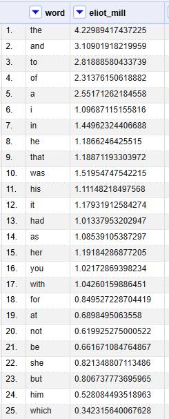


---

##### Auswertung / Visualisierung

###### Cluster Analysis

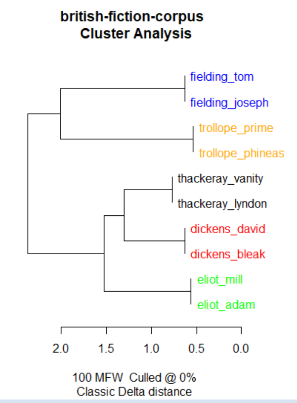

--

###### Multidimensional Scaling (MDS)

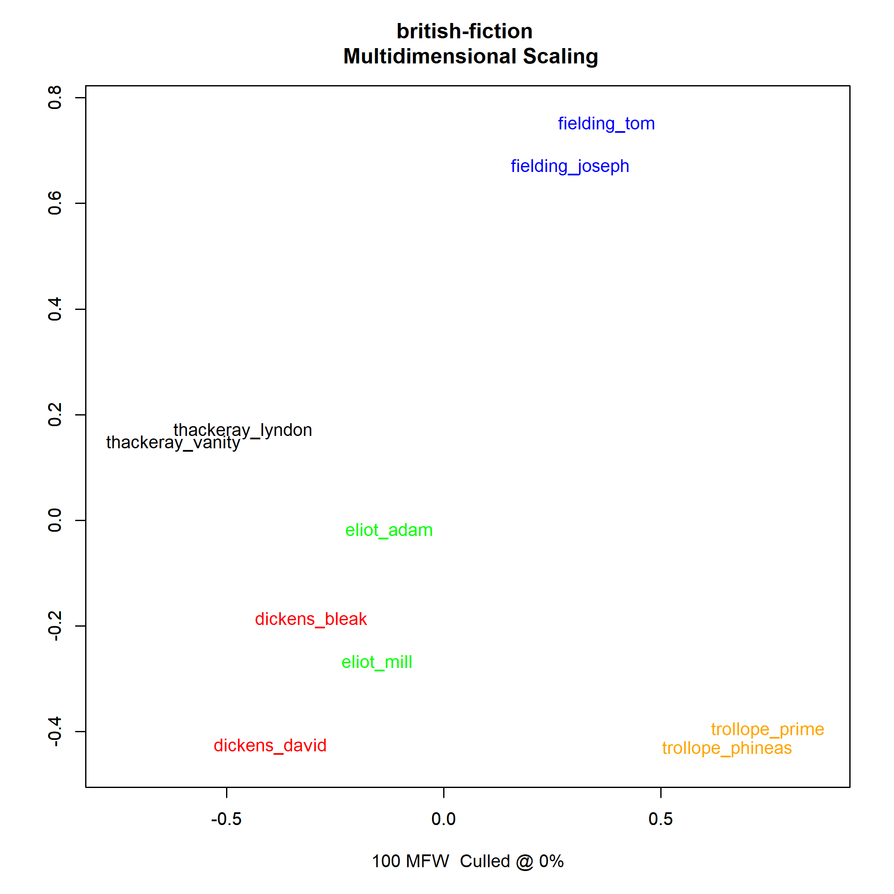

--

###### Principal Component Analysis (PCA)

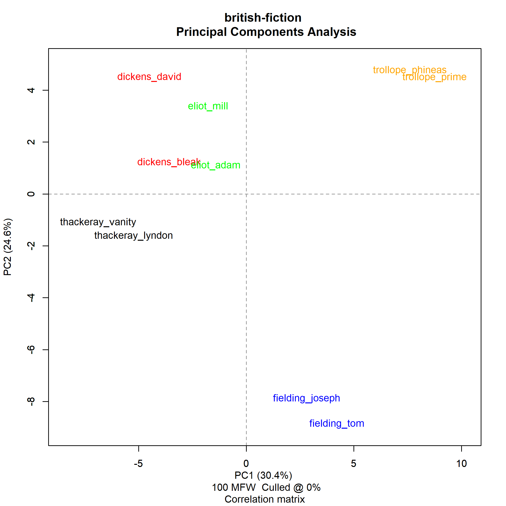

--

##### Verlässlichkeit und Interpretation

Welche Visualisierung ist überzeugend? 

Ist die überzeugendste die beste? Cherry-Picking?

--

###### Auch eine Principal Component Analysis (PCA)

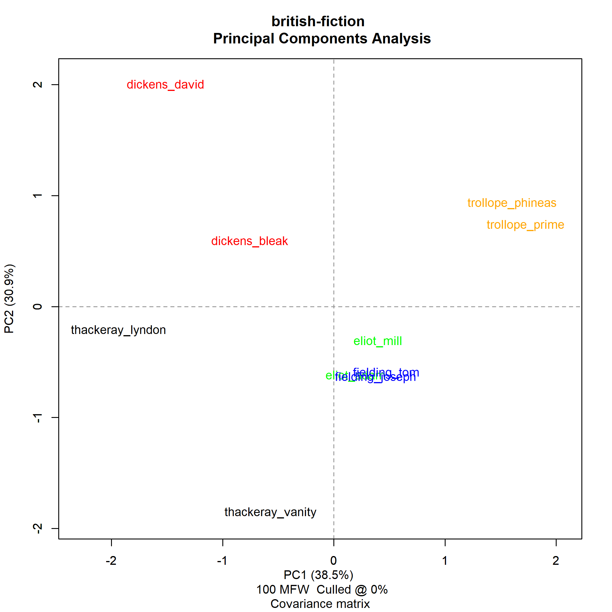


--

###### Bootstrap Consensus Tree

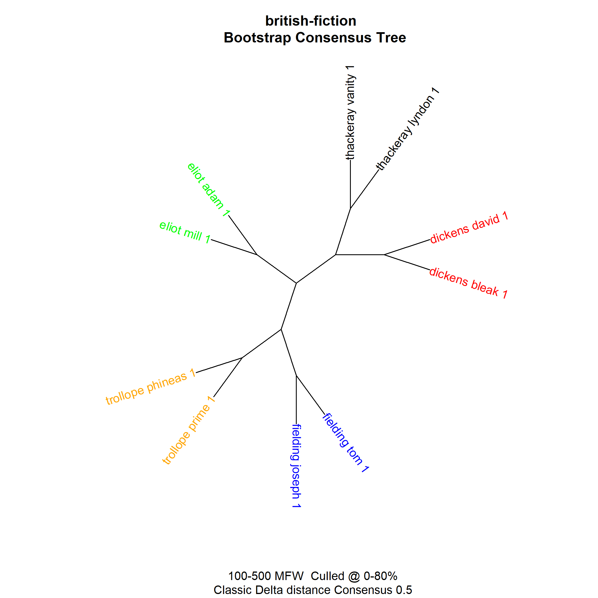

---

### stylo

Eder, M., Rybicki, J. and Kestemont, M. (2016). Stylometry with R:
a package for computational text analysis. R Journal 8(1): 107-121.
https://journal.r-project.org/archive/2016/RJ-2016-007/index.html

[Repositorium](https://github.com/computationalstylistics/stylo?tab=readme-ov-file)

--
### Installation / Laden

> install.packages("stylo")

> library(stylo)

--
### Arbeitsverzeichnis setzen

> setwd("[Pfad-zum-Arbeitsverzeichnis]")

---
### British fiction

10 Romane von 5 Autor\*innen

3 "anonymisierte" Romane <!-- .element: class="fragment" -->

--

> stylo()

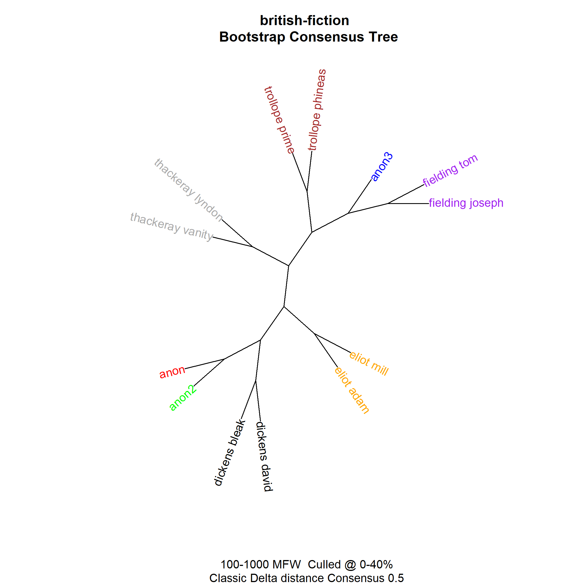

--
stylo()-"pipeline"
- Prepocessing (Tokenisierung; lowercasing (optional)...)
- MFW-list
- Matrix: MFW-frequenzen in jedem Text
- Normalisierung
- optional: Culling, Entfernen von Personalpronomen
- Distanzanalyse (Cluster-Analyse, PCA, MDS)
- Visualisierung

--

> classify()

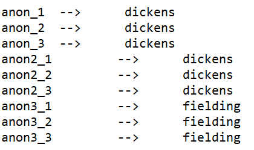


--

> oppose()

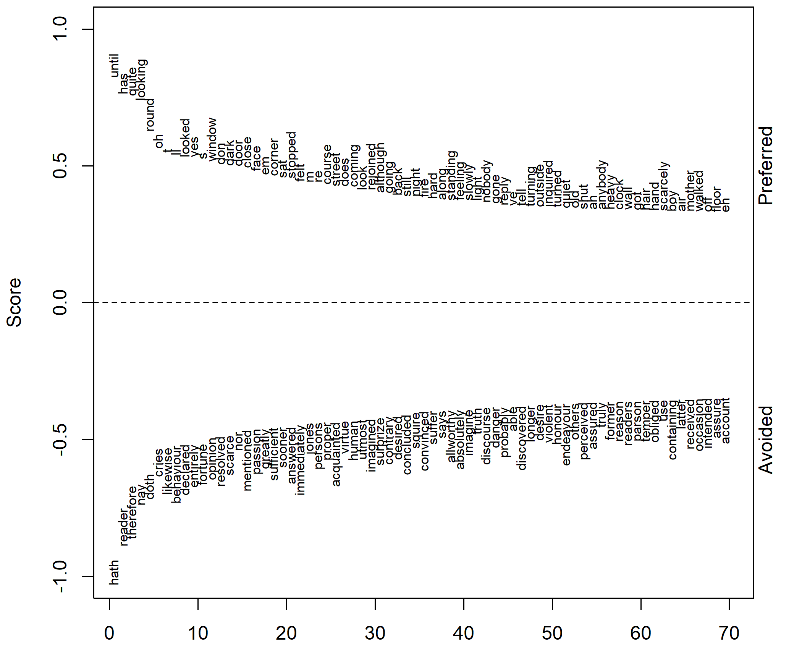

---

### The *Connaissance des beautés*

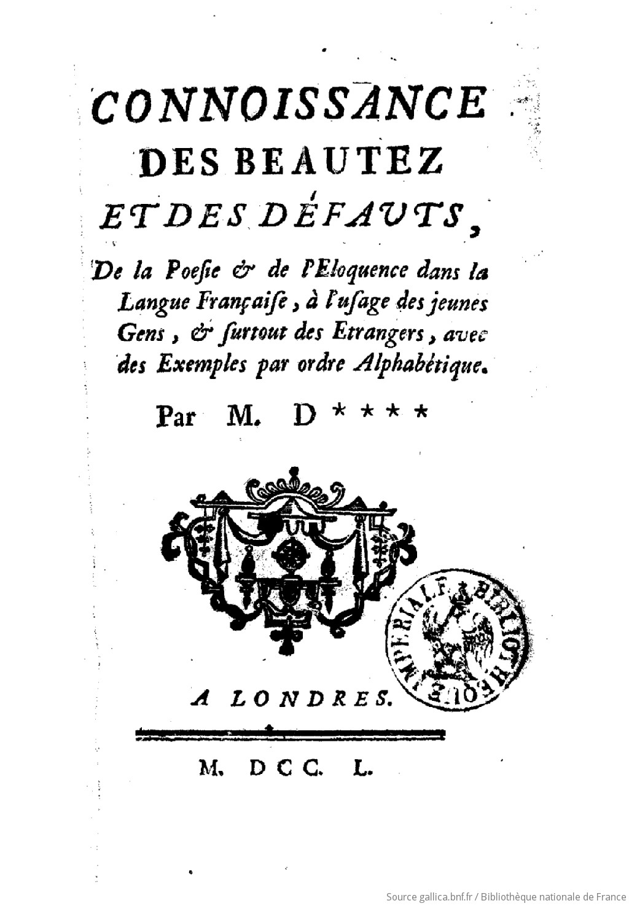

--

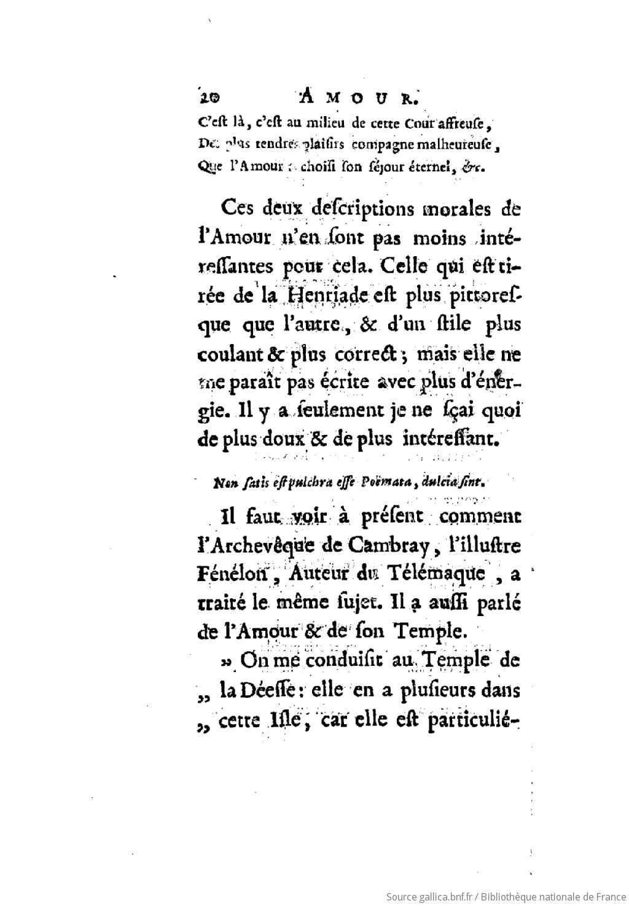

--

In "echten" Projekten

- Aufwand zur Textbereinigung und Erstellung der Sets nicht unterschätzen!

- Was sind die Vergleichskandidaten?

- Wie viele Texte sind nötig?

- Habe ich genug Texte von den Autor\*innen?

- Welche Einflüsse könnten Genre-Aspekte haben?

--

# stylo()

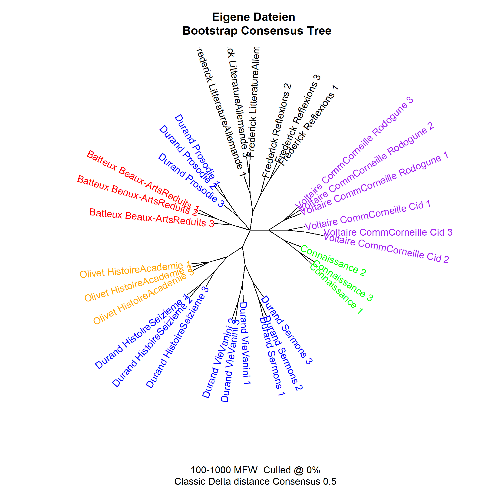


--


# classify()

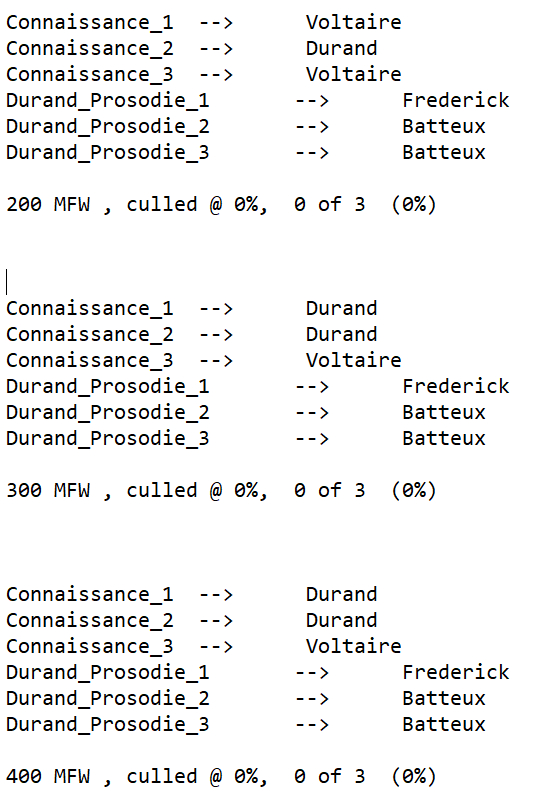

--

> Ergebnisse sind interpretationsbedürftig!

> Ergebnisse sind nicht notwendig eindeutig!

> Einflüssse von Genre, Textlänge, etc. schwer zu kontrollieren!

---

### Ressourcen

Eder, Maciej (2013): "Mind your corpus: systematic errors in authorship attribution". Literary and Linguistic Computing 28.4: 603–614.

Eder, Maciej (2015): "Does size matter? Authorship attribution, small samples, big problem". Digital Scholarship in the Humanities 30.2: 167–182. doi:10.1093/llc/fqt066.

--

### Ressourcen

Evert, Stefan, Thomas Proisl, Fotis Jannidis, Isabella Reger, Steffen Pielström, Christof Schöch und Thorsten Vitt (2017): "Understanding and explaining Delta measures for authorship attribution", Digital Scholarship in the Humanities 32, ii4–ii16. doi:10.1093/llc/fqx023.

Horstmann, Jan (2018): „Stilometrie“. In: forTEXT. Literatur digital erforschen. URL: https://fortext.net/routinen/methoden/stilometrie


---

## Danke für die Aufmerksamkeit


</section>
         
        </script>
        
      </div></div></body>
    </div>
    <script src="raphael-min.js"><
      <script src="flowchart-latest.js"></script>
    <script src="dist/reveal.js"></script>
    <script src="plugin/markdown/markdown.js"></script>
    
    <script>
      Reveal.initialize({
    plugins: [ RevealMarkdown ]
  });
    </script>


  </body>
</html>